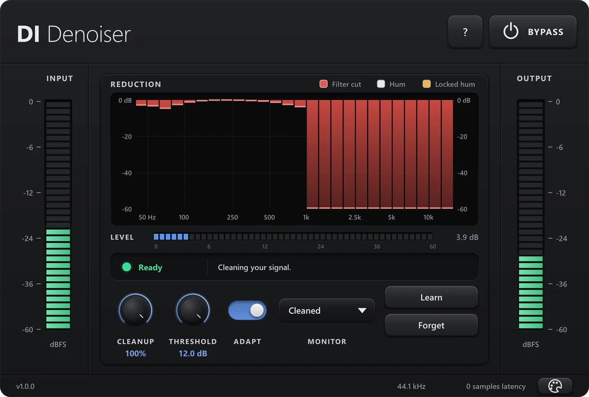

Audio plug-in · Windows VST3 / CLAP
DI Denoiser
Removes the noise your pickups catch from your PC: GPU whine, VRM buzz and mains hum. Zero latency, it learns the noise by itself, and your notes ring out while the gaps go silent.
Same take, off and on
0:00
OFFON
Through a high-gain amp sim, PC noise and all. Flip it while it plays.
Get DI DenoiserOn Gumroad. No licence key, no account, no activation.
